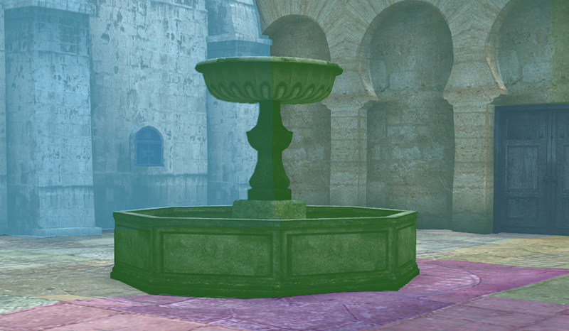

| On supported Unix-type OS (Linux variants, FreeBSD, OpenBSD) clone the repo, compile and run. |
☞
|
git clone --depth 1 https://github.com/schaban/draw-walkthrough.git
|

|
☜
|
Scene displayed after compiling and running the sample program will
look similar to what's shown on the left side of this image.
Conceptually this scene can be split into three distinct types of objects: A - animated character, deformable model; B - background stage, static model; C - text message; |
|
|

|

|
|
|
☝︎
Of these three types animatedcharacter is the most complex. |
☝︎
Base geometry in rest position.
|
☝︎
Weights and joints.
|
☝︎
Batches.
|
{kind=link}
{kind=link}
{kind=link}
|
|
 |
|
|
☝︎
Stage model is static, so there isno need to deform or even move it, so this object type is much simpler. |
☝︎
Only model geometry is needed,no weights and joints. |
☝︎
But it's still split in separatebatches for drawing. |
{kind=link}
{kind=link}
{kind=link}
{kind=link}
Rendering in this example is abstracted from a particular graphics API with the interface shown below,
declared in draw.hpp:
struct Ifc {
...
void (*init)(const int shadowSize, cxResourceManager* pRsrcMgr, Font* pFont);
void (*reset)();
int (*get_screen_width)();
int (*get_screen_height)();
cxMtx (*get_shadow_bias_mtx)();
void (*init_prims)(const uint32_t maxVtx, const uint32_t maxIdx);
void (*prim_geom)(const PrimGeom* pGeom);
void (*begin)(const cxColor& clearColor);
void (*end)();
void (*batch)(cxModelWork* pWk, const int ibat, const Mode mode, const Context* pCtx);
void (*prim)(const Prim* pPrim, const Context* pCtx);
void (*quad)(const Quad* pQuad);
void (*symbol)(const Symbol* pSym);
};
This document walks through a very basic implementation using OpenGL.
Initial code is in draw_simple_ogl.cpp
The two highlighted calls in the above interface are what's necessary
to implement to display the sample scene:
symbol to draw the text, batch to render both types of models.
./run.sh -draw:simple_ogl
|
☜
|
Launching the sample program like this will select draw-interface implementation from draw_simple_ogl.cpp. |